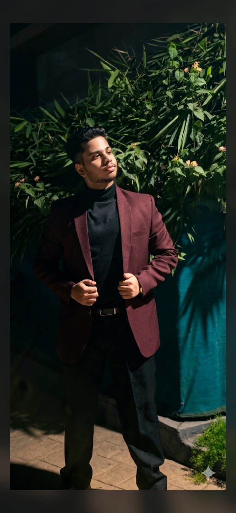

Foundations
Computer science, software engineering and algorithms.
AI · SOFTWARE · REAL-WORLD SYSTEMS
I combine machine learning, software, computer vision and robotics to build systems that move from an idea to something usable.

BEYOND THE CODE
I’m Shaun — an MSc AI student at King’s College London with a background in computer science and software engineering.
I’ve worked across machine learning, computer vision, LLMs, robotics, embedded systems and full-stack software, with a focus on understanding how the pieces fit together.
See the journey →THE LONG GAME
My MSc at King’s is the next layer: stronger foundations, deeper machine learning, and more ambitious systems.
Computer science, software engineering and algorithms.
Models, data pipelines, evaluation and optimisation.
Neural networks and the ideas behind modern AI.
Real-time detection, tracking and perception.
Embedded systems, control and physical interaction.
Putting everything together into useful products.
PROJECT EXPLORER
Filter by discipline, then open a project for the technical details. The layout stays intentionally roomy so each project has space to breathe.
Implemented fundamental neural-network layers to understand how data flows through a neural network and strengthen the foundations behind higher-level deep-learning frameworks.
Real-time micro-sleep detection using facial tracking and YOLO with adaptive visual, auditory and haptic alerts.
Multi-legged Arduino robot with servo control, autonomous movement and Bluetooth operation.
Betaflight · PID tuning · flight diagnostics
ESP32-C6 · OLED · embedded C/C++
Python · graph algorithms · IoT simulation
Full-stack · MySQL · authentication
WORK
Internships and operational roles have given me practice moving between models, data, software, documentation and real-world troubleshooting.
ScholarRankAI · Remote
Architected AI prototypes and performance dashboards, ran systematic error analysis and contributed to benchmarking and responsible-AI research.
Ecode Networks · India / London / Remote
Developed and fine-tuned LLMs, designed text-processing data pipelines and worked on model evaluation and inference optimisation.
Stenosis Institute · India
Managed computer-based workflows, wrote professional correspondence and explained technical and unfamiliar material clearly.
STACK
I work across the model, the software layer and the hardware when the problem calls for it.
King's College London
Department of Informatics · London, United KingdomAjeenkya DY Patil University, Pune
AI, ML, IoT and Robotics minor · CGPA 9.24 / 10Captain across national-level hackathons, contributor to robotics projects and organiser / mentor through Google Developer Student Club.
LET'S BUILD
I’m interested in AI / ML opportunities, technical collaborations and projects where software needs to meet the real world.